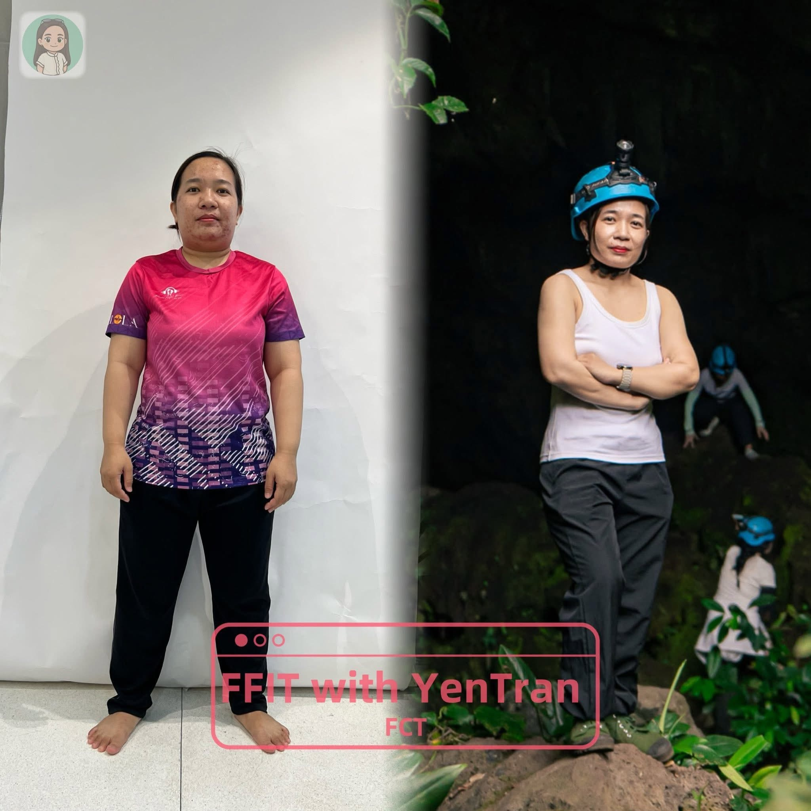
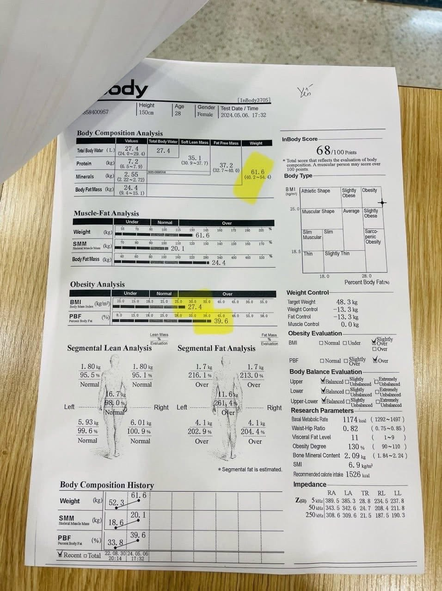
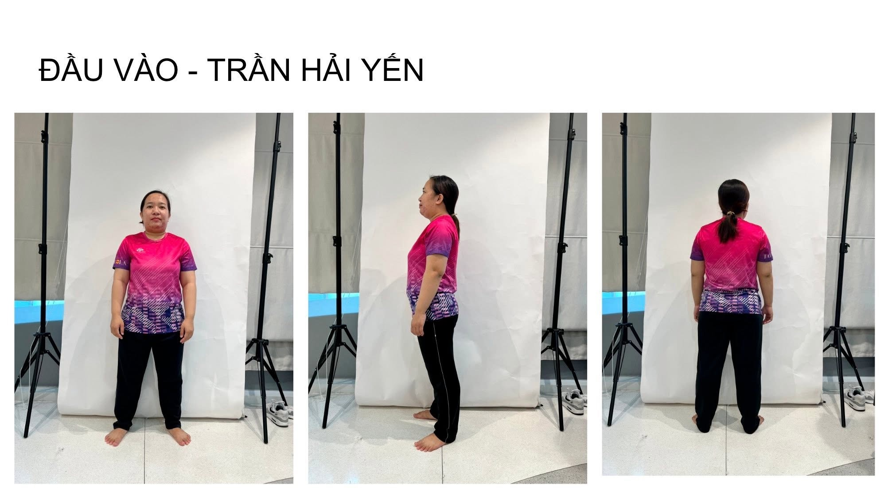
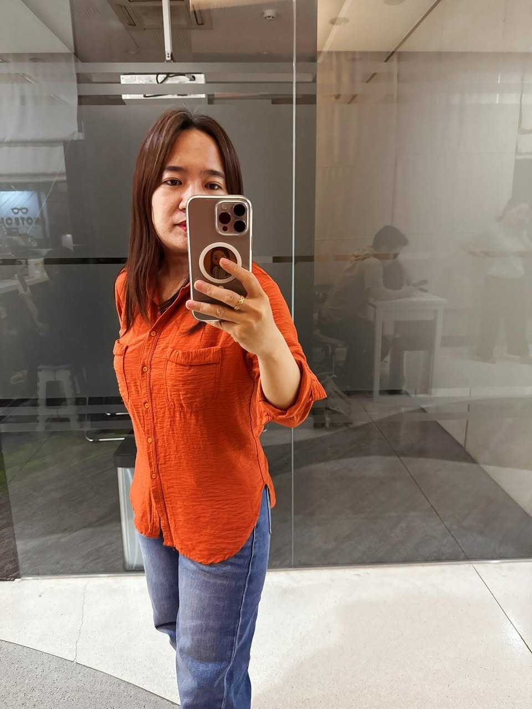
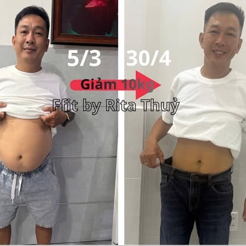
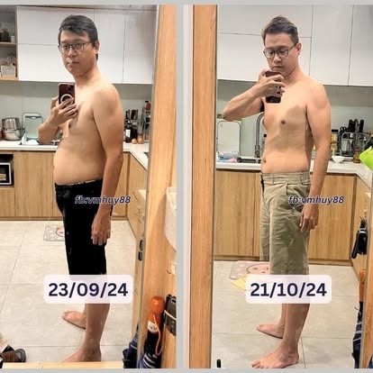
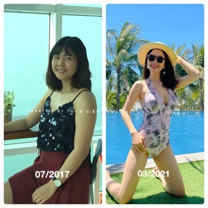

☁️
Cơ thể âm thầm lên tiếng
Dễ mệt, ngủ không ngon, nặng nề hoặc thiếu tự tin có thể là lời nhắc để bạn quan sát lại lối sống của mình.
Mình đã giảm 11 kg và duy trì gần 2 năm — không nhịn một bữa nào. Điều giúp mình đi được lâu không phải ý chí sắt đá, mà là một cách tiếp cận phù hợp với cơ thể và đời sống thật.
Yến sẽ lắng nghe trước khi nói bạn nên làm gì.

Vẫn đi làm đều, vẫn cười nói bình thường, vẫn hoàn thành mọi vai trò mà người khác nhìn vào. Cho đến khi cơ thể bắt đầu lên tiếng: mệt mỏi kéo dài, mất ngủ, da dẻ sạm đi, cân nặng tăng mà không hiểu vì sao. Rồi một lần đi khám sức khỏe, mình nhìn kết quả và thật sự khựng lại.
Hóa ra bao lâu nay mình đang cố duy trì mọi thứ, chứ chưa thật sự sống cho mình. Mình bắt đầu lại không bằng một kế hoạch to tát, mà từ những điều rất nhỏ: một bữa sáng đàng hoàng, một ly nước ấm và vài phút để hỏi xem hôm nay cơ thể đang thế nào.
Đây không phải hành trình để trở nên hoàn hảo. Là hành trình để mỗi ngày trôi qua do chính mình chọn, thay vì chỉ trôi theo quán tính.
Hồi 61,6 kg, mình không hề nghĩ mình có vấn đề. Mình vẫn mặc đồ như cũ và tự nhủ “chắc chưa đến mức đâu”. Chỉ đến khi nhìn lại ảnh của chính mình và không còn thấy thoải mái nữa, mình mới quyết định nhìn thẳng vào điều đang xảy ra.
Con số trên cân chỉ là một tín hiệu. Điều đáng quan tâm hơn là năng lượng, giấc ngủ, tỷ lệ mỡ – cơ, thói quen ăn uống và cách cơ thể phục vụ cuộc sống của bạn mỗi ngày.
Dễ mệt, ngủ không ngon, nặng nề hoặc thiếu tự tin có thể là lời nhắc để bạn quan sát lại lối sống của mình.
Cùng một con số nhưng tỷ lệ mỡ, lượng cơ và thói quen sống có thể rất khác. Vì vậy cần hiểu dữ liệu trong bối cảnh của từng người.
Bạn không chỉ muốn xuống cân một lần. Bạn cần hiểu cách ăn và cách điều chỉnh để không phải liên tục “bắt đầu lại”.

Tỷ lệ mỡ cao, khối lượng cơ thấp và cơ thể mất cân bằng. Lúc đó mình hiểu: vấn đề không chỉ là trông gầy hay đầy đặn. Cần biết mình đang thay đổi điều gì — và vì sao.
Mình cũng từng dừng giữa chừng như nhiều người khác. Nhưng lần quay lại, mình không tự phạt bản thân. Mình tiếp tục từ nơi mình đang đứng và học cách duy trì ở 49–51 kg gần hai năm.
Yến tham khảo phương pháp F.FIT — tiếp cận kiểm soát mỡ dựa trên kiến thức dinh dưỡng, cơ chế chuyển hóa, cấu trúc bữa ăn và theo dõi thực tế. Lộ trình không sao chép máy móc; nó cần được điều chỉnh theo nhịp sống, mục tiêu và tình trạng của từng người.
Lắng nghe câu chuyện, xem thói quen ăn – ngủ – vận động và các dữ liệu sẵn có để nhận ra điều đang cản trở bạn.
Tập trung vào sự cân đối, đủ chất và những thay đổi nhỏ có thể sống cùng — thay vì cắt bỏ cực đoan một nhóm thực phẩm.
Theo dõi cân nặng cùng năng lượng, cảm giác no đói, giấc ngủ và mức độ bền vững để biết điều gì thật sự phù hợp.
Một bữa ăn lệch hay một tuần bận không xóa sạch tiến trình. Ta tìm nguyên nhân, chỉnh một bước nhỏ rồi đi tiếp.


Các hình dưới đây là những trường hợp được chia sẻ trong cộng đồng F.FIT. Chúng là minh họa cho quá trình thay đổi, không phải lời đảm bảo rằng mọi người sẽ đạt kết quả giống nhau.



* Hình ảnh do người dùng cung cấp. Kết quả thực tế thay đổi tùy cơ địa, sức khỏe, thói quen và mức độ tuân thủ; không có cam kết về mức giảm cân cụ thể.
Muốn xem thêm tư liệu về phương pháp và các hành trình?
Thư viện F.FIT tập hợp thêm hình ảnh minh họa để bạn chủ động tìm hiểu trước khi nhắn Yến.
Nhiều người không thiếu sự cố gắng. Họ chỉ đang cố theo một cách không phù hợp, hoặc phải tự mình ghép quá nhiều lời khuyên trái ngược.
Lắng nghe trước: bạn đã thử gì, điều gì từng hiệu quả, điều gì khiến bạn bỏ cuộc.
Làm rõ điểm bắt đầu: mục tiêu, sinh hoạt, bữa ăn và các dữ liệu cơ thể bạn đang có.
Cùng xây bước nhỏ: một cách ăn và theo dõi đủ thực tế để không phá vỡ công việc, gia đình hay đời sống xã hội.
Đồng hành khi lệch nhịp: tìm nguyên nhân, điều chỉnh và tiếp tục — không biến một lần sai thành lý do từ bỏ.
Không có một quy tắc cực đoan phù hợp với tất cả mọi người. Mục tiêu là hiểu khẩu phần và cấu trúc bữa ăn để lựa chọn phù hợp hơn, không phải tạo ra nỗi sợ với thực phẩm.
Lộ trình bền vững phải dùng được trong đời sống thật. Yến sẽ cùng bạn tìm lựa chọn khả thi trong lịch làm việc và hoàn cảnh hiện tại, thay vì yêu cầu một nếp sống lý tưởng.
Không ai có thể cam kết trước kết quả. Điểm khác của cách tiếp cận này là bạn học cách hiểu, theo dõi và điều chỉnh, để giảm phụ thuộc vào một thực đơn cứng hoặc một giai đoạn quyết tâm ngắn.
Không. Yến chia sẻ trải nghiệm cá nhân và đồng hành về thói quen dinh dưỡng, lối sống. Nội dung không thay thế tư vấn, chẩn đoán hoặc điều trị y khoa.
Yến lắng nghe mục tiêu, lịch sống, những cách bạn đã thử và điều khiến bạn mắc kẹt. Hai bên cùng xác định một điểm bắt đầu phù hợp. Bạn có quyền hỏi kỹ và tự quyết định có tiếp tục hay không.
Nếu bạn đang ở nơi mình từng đứng — thấy cơ thể thay đổi, đã thử nhiều cách nhưng vẫn loay hoay — hãy kể Yến nghe. Chúng ta sẽ bắt đầu từ chính cuộc sống hiện tại của bạn, chậm rãi nhưng rõ ràng.
Chọn cách kết nối với Yến →